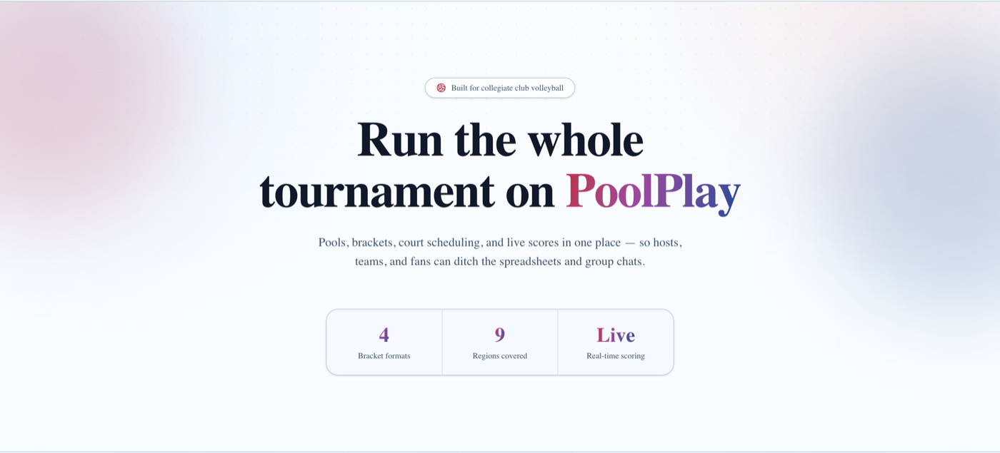
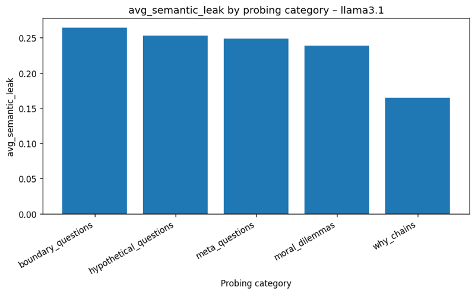
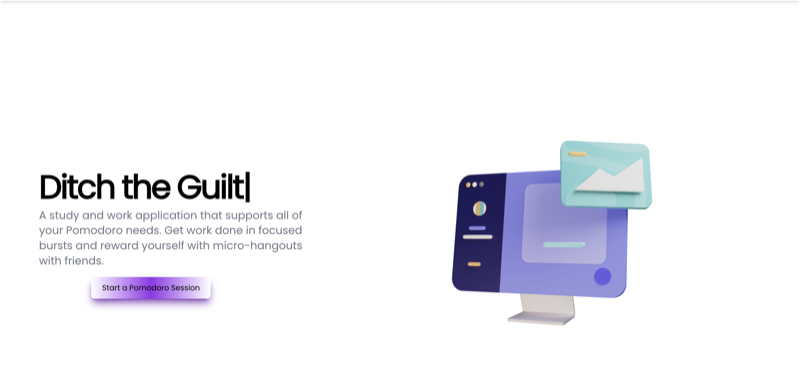
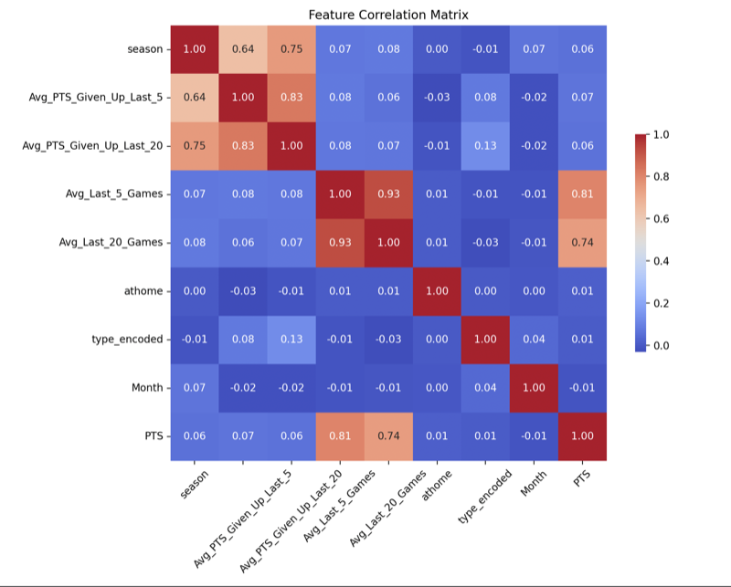
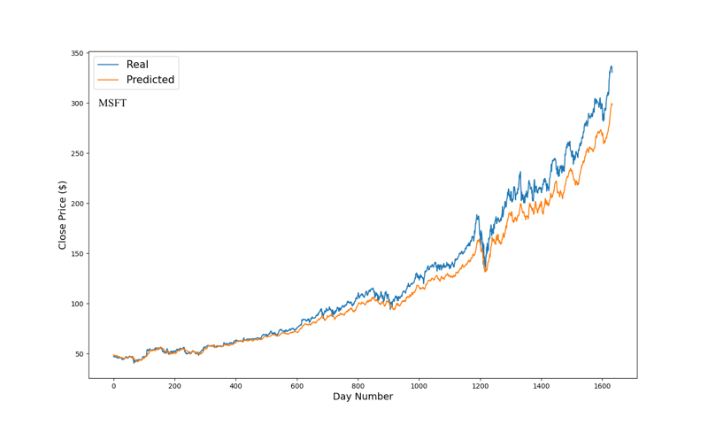

Work
-
2025 - Now
Bank of America Software Engineer
Started as an intern and returned full time. Built a timeseries ticker-dependency dashboard for Value-at-Risk backtesting, kicked off a migration of 7B+ records from Sybase to Apache Iceberg for horizontal scaling on Spark, and shipped a Python charting library plus an internal portal for standardized financial visualizations. Currently working in Market Risk Analytics.
Jersey City, NJ
-
2024
SAI Software Engineer Intern
Worked on an AI course-support platform used by 20,000+ students and 20 professors. Shipped study-app features from Figma mockups and led WCAG 2.1 AA compliance: responsive layout, keyboard navigation, and zoom support.
New York, NY
-
2024
Casing Machine Developer
Case-interview prep platform with 10K+ users. Built the interview UI and voice-to-text transcription, and rewrote the GPT prompt templates that drive longer mock interviews.
Atlanta, GA
Projects

2026
LLM Refusal Signal
Do open-weight models leak the hidden rules they were told to keep, just by refusing? Probed Llama 3.1 across five question categories and scored how much of the secret rule set showed up in the refusal wording.


2024
NBA Prop-Bet EV Model
Co-authored paper on beating the house at player prop bets. Trained on 1997-2023 NBA box scores with rolling player averages and opponent defensive trends; an MLP regressor reached R² 0.651 against random forest, ridge, and k-NN baselines.

2022
Stock Close Prediction
Research under CMU professor Vipul Goyal. A multilayer perceptron trained on Alpha Vantage price history to predict adjusted close. Published as Stock Close Adjusted Predictions through Neural Networks in Creativity and Innovation, 2022.
Awards
- 2024HackATL3rd place
- 2023ICPC Southeast USA Regional2nd place
- 2022AIMEQualifier
- 2022National Merit ScholarshipScholar
- 2021USACOSilver
Interests
Volleyball
Libero
I played libero/DS for the Emory Men's Club Volleyball team from 2022-2024. Still looking for open gyms and leagues in the Jersey City/NYC area!
Chess.com
1870peak blitz rating
I do best under the time pressure of 3 minute blitz games, although I'm thinking about playing in OTB tournaments once again.
Book List
Favorite series
Dune
My favorite book and series. I have read through Heretics of Dune and I am on Chapterhouse: Dune now, the last novel in Frank Herbert’s original saga.
- Dune
- Dune Messiah
- Children of Dune
- God Emperor of Dune
- Heretics of Dune
- Chapterhouse: Dune
On the final book. Not finished yet.
-
Reading now
Hyperion
Working through the first novel in the Hyperion Cantos.
-
Read
The Stand
I worked through the unabridged edition during the pandemic, and it hit differently than it probably would have otherwise. King juggles a huge cast without losing the thread, and the slow collapse into two camps still feels unnerving. One of my highest-rated reads.
-
Read
Ender’s Game
A classic for a reason. The writing holds up well and the ending still lands even when you know the premise going in. A good read, not just a checkbox on the sci-fi canon list. I'd love to read the other books in the series when I get a chance!
-
Read
And Then There Were None
My introduction to Agatha Christie's writing and 'golden-age' mysteries. The greatest mystery novel ever written!
Contact me
Say hi!
Feel free to reach out about anything, my inbox is open.
andrew.chang.sd@gmail.com